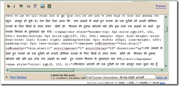
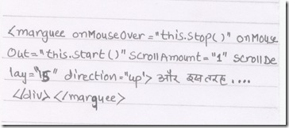

add pull quote in your blog post
अपने चिट्ठे में पुलकोट लगायें
....और इस तरह सागर नाहर भारत के महानतम ब्लॉगरों में गिने जाने लगे। :)
यह देखने के बाद आपको भी लगता होगा कि आपकी रचनाओं की मुख्य बातों को भी अलग से दिखाना चाहिये, सुन (पढ़) रहे हैं ना अनिलजी ? मानस वाली कहानी में ऐसा किया जा सकता था!आइये तो आपको इस तरह अपने लेख की मुख्य़ लाईनों को अलग से दिखाने का तरीका बताते हैं।
नीचे चित्र में बताये कोड को कॉपी कर लेवें..
<p style="border-top: 7px solid rgb(92, 138, 100); border-bottom: 7px solid rgb(92, 138, 100); margin: 10px; font-weight: bold; font-size: 12pt; float: right; padding-bottom: 7px; width: 200px; line-height: 100%; padding-top: 7px; text-align: center;">....और इस तरह सागर नाहर भारत के महानतम ब्लॉगरों में गिने जाने लगे। :)</p>

भाई जहाँ हमने एक महान ब्लॉगर की तारीफ करी है आप मत कर दीजियेगा,....वहाँ अपने लेख की खास लाईने चेंप दीजियेगा। .. वैसे करना चाहें तो हमें कोई आपत्ति नहीं! ;)
अब कोड में बदलने योग्य बातें
बस मुख्य लाईने के पहले यह कोड चेप दीजिये और पूरे कोड अंत में </marquee> लिख दीजिये। ऐसा करने से उपर और नीचे की लाईन अपनी जगह पर रहेगी पर उसमें लिखी लाईनें नीचे से उपर की तरफ घूमती दिखाई देगी।

और भी कई तरह के बदलाव किये जा सकते हैं मसलन उपर नीचे की लाईनों को हटा कर एक बॉक्स में मैटर को दिखाना, बेकग्राउंड कलर दिखाना, इमेज दिखाना आदि लेकिन वह सब और कभी........
एक दो दिन पहले रवि रतलामी जी एक टिप्पणि इसी पोस्ट पर मिली थी उसे भी यहाँ दिखा रहा हूँ-
उपर्युक्त कोड में कुछ समस्या थी जो ब्लॉगर में काम नहीं कर रही थी. उन्मुक्त जी ने यह निम्न कोड इस्तेमाल किया और यह सही काम कर रहा है (ब्लॉगर ब्लॉग में)
उन्मुक्त जी के लिये यह सही कोड जिसे काम करना चाहिये
Comment by raviratlami — 23, December 2007
अरे ऊपर तो वर्ड प्रेस का कमेंट एचटीएमएल कोड खा गया. चलिए दूसरा उपाय करते हैं. आपसे आग्रह है कि नीचे दिए कोड को “उन्मुक्त जी के लिये यह सही कोड जिसे काम करना चाहिये
<style=”border-top:7px solid #5c8a64;border-bottom:7px solid #5c8a64;font-weight:bold;font-size:12pt;float:right;padding-bottom:7px;width:200px;line-height:100%;padding-top:7px;text-align:center;margin:10px;">
धन्यवाद रवि भाई साहब
एक और अच्छे कोड के लिये।
मैने ब्लॉगर पर जब प्रयोग किया तब यह सही चल रहा था!
चलिये इसी बहाने एक और जानकारी तो मिली।
वर्डप्रेस पर कोड की वजह से बड़ी परेशानी होती है सो ब्लॉगर पर एक नया चिट्ठा ही बना लिया है जिस पर पुराने सारे प्रकाशित लेख और आने वाले तकनीकी लेख होंगे।
एक बार पुन: धन्यवाद।
Comment by सागर चन्द नाहर — 24, December 2007